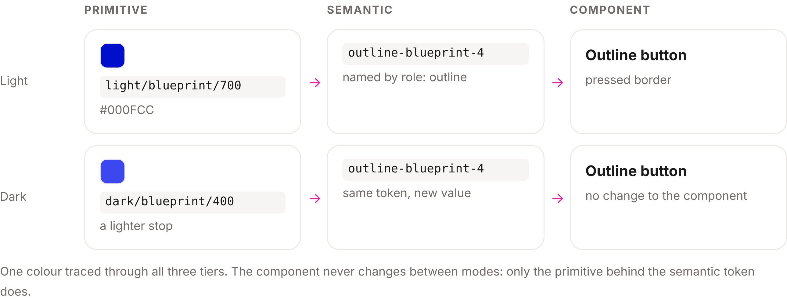
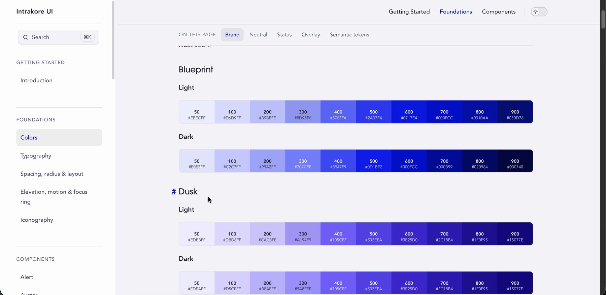
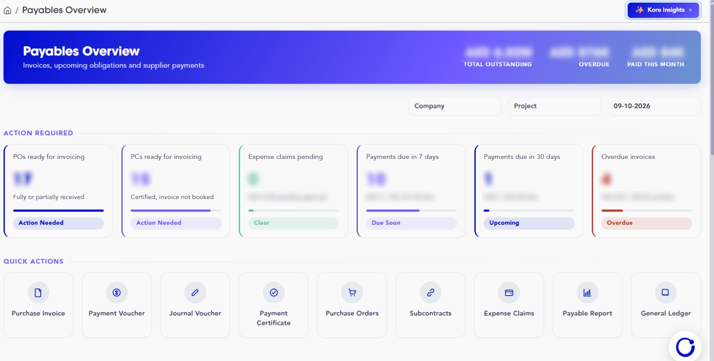
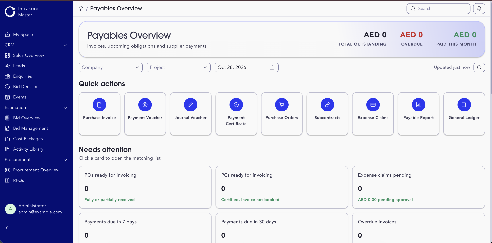
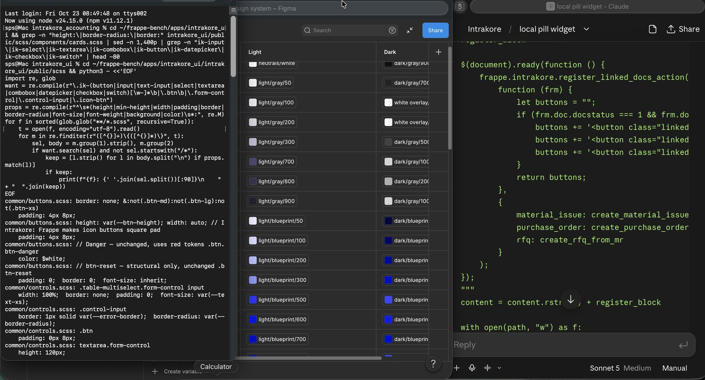

Intrakore: one design system for a construction ERP
I designed and engineered the design system behind a 23-app ERP, from hand-built colour ramps to shipped component libraries and a theming app every module inherits.
Design Engineer, Design Systems
Frappe V16 ERP · 23 apps
Foundations, tokens, Figma library, two component libraries, desk theming app, accessibility fixes, governance and docs site. I designed it and shipped the code.
Built the module dashboards and backends, and handled deployment. I set the system they build on and reviewed their pages against it.

One product, but 23 apps that looked like several.
- No system. Colour and type lived in SCSS, Sass variables, Vue and inline JavaScript.
- Parallel drift. Each dashboard had its own fonts, colour copies and dark-mode selector.
- A live product. Nothing could break while the system went in.
| Surface | What I found | Call |
|---|---|---|
| Desk SCSS (50+ files) | Hardcoded hex, raw grays | Drift |
| Sales Cockpit | Off-brand fonts, 11 wrong dark selectors | Drift |
| Commercial Space | Off-brand fonts | Drift |
| Estimation Space | Right values, copied not wired | Debt |
| Module accent colours | Proposed early, then dropped | Decision |
The rule: a difference stays only if it carries meaning. Everything else resolves to a token.
Hand-built ramps, three token tiers. Developers choose by purpose, never by hex.

- Palette. Blueprint, Dusk, Clearing, a brand-tinted neutral, Plaster and Iron.
- Ramp over brand hex. Primary is #000FCC, not the brand's #000FCE, so every step of the ramp reads evenly.
- Dark mode, not inverted. The brand's dark colours, Sky and Mist, broke the sidebar, so dark uses lighter Blueprint and Dusk stops.

Two libraries, one token set. Gray at rest, Blueprint on interaction.
- Vue library · intrakore-ui (npm). 25 components: forms, tables, navigation, charts, calendar, feedback and a dashboard card header.
- Native JS library · IK_Components. For desk dashboards, which are plain JavaScript pages. Includes nine chart types on ECharts.
- 114 tokens, one source behind both.
The outline button: one rule across five states
Status has meaning, not decoration
Contrast and focus: where an ERP people use all day fails first.
Navy on near-black. The ring disappears.
Brighter Blueprint step. Visible.
The shared focus token resolved to a dark navy that vanished on dark backgrounds. I moved dark-mode rings to outline-blueprint-4 across buttons, fields and the shared focus token.
- Contrast-checked ramps. Tested against WCAG AA on white. A mid Blueprint stop (#5763FA) fails for text, so text uses darker stops.
- Keyboard vs mouse focus. Bootstrap kept a grey ring after every click. I split it: 2px on keyboard focus, 1px after a click.
- Restored, not copied. When an upstream update deleted a component's focus ring, I put it back.
Next: reduced motion, a screen-reader pass and right-to-left (Arabic) layout.
One root-cause fix restored brand fonts and dark mode across the whole desk.
I packaged the system as a Frappe app that themes the desk from source SCSS, so every module inherits it with no per-app overrides.
Brand fonts and dark mode missing everywhere.
Live token values in the console didn't resolve at all.
The stylesheet hook in hooks.py was commented out. Tokens never loaded.
A proper SCSS bundle, the hook enabled, @font-face added, dark text tokens filled in.
Fonts and dark mode restored product-wide.
Adoption, measured


How reviews work
| What I find | What happens |
|---|---|
| Global token bug | I fix it |
| Field configuration issue | Goes to the PM |
| Custom doctype with no tokens | Flagged before anyone fixes it |
I also wrote guidelines for headers, cards, search, dropdowns, date pickers and uploads.
A designer who ships production code, with Claude as engineering partner.
- Claude helped with: reading unfamiliar framework source, tracing build issues, and writing and refactoring components. I verified every change live in the browser and shipped through tickets, branches, PRs and CI.
- What stayed mine: the ramps, the token architecture, every design decision, scope calls and the review of every change.
No handoff gap: I didn't pass specs to developers. I shipped the system.

See the Intrakore UI docs site.
The documentation site I built for the engineering team covers colour ramps, tokens and component usage. It belongs to a client project, so I share it with interested reviewers on request.
Next case study
Tasheel Post →